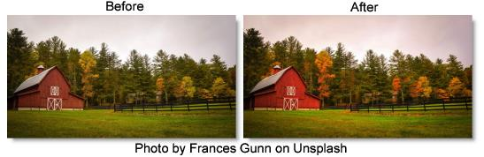

S_VintageColor3Strip
Description
Simulates the color 3-strip film process from 1935 through 1955. Three-strip color was a subtractive process which exposed three separate film strips through color filters which were then applied complementary color dyes to the print according to the density of the original records. This process was used for many films such as The Wizard Of Oz, Fantasia, and Gone With The Wind.
Modern color film has much broader color filtering in the emulsion layers, so this effect simulates the narrower filters and sharper colored dyes of the era which gave it its characteristic vibrancy. This effect also allows adding grain and color correction.
The S_VintageColor3Strip filter comes from the Emmy award winning Boris FX Sapphire filter set.
Category
Film Lab.
Controls
Presets
To select a preset, pick one from the Presets window.
Amount
Amount of the effect to use. Set to 0 to get the original image. Increase beyond to oversaturate.
Key Layer Density
From 1932 up to about 1945, the blank print started with a 50 percent black and white duplicate of the green original record. This increased apparent sharpness and improved contrast. Set this to .5 for a historically accurate key layer, but it will decrease the overall brightness. After 1945, the key layer was no longer needed due to improvements in the process.
Brightness
Scales the brightness of the result.
Tint
Tints the image towards the given color.
Saturation
Scales the color saturation. Increase for more intense colors. Set to 0 for monochrome.
Offset Darks
Adds a gray value to the darker regions of the result. This can be negative to increase contrast.
Grain Amp
Scales the amplitude of the film grain that is added to the result. Set this to 0 to disable all grain.
Grain Blur
The grain is smoothed by this amount. Increase for coarser grain.
Show
Shows either the final result or any of various intermediate parts of the process.
Result
Shows the final result.
Pure Colors
Shows an RGB mask containing only the pure colors in the image.
Complementary Masks
Shows a mask of the complementary colors used to apply the dyes to the final print.